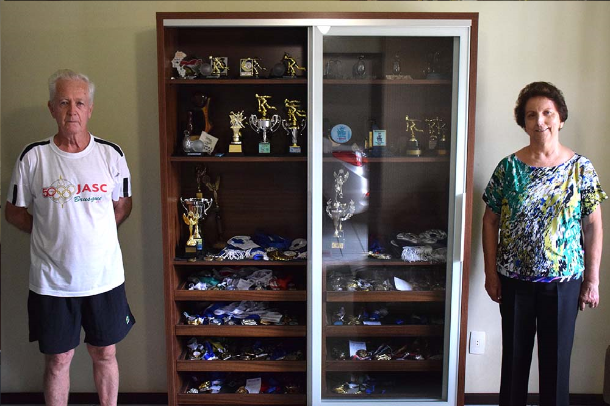

Casal de idosos de Jaraguá do Sul já ganhou mais de 700 medalhas no esporte
Fonte: OCP News
Quando falamos em atividade física para pessoas da terceira idade, muitos tendem a associar para essa faixa etária práticas mais leves.
Porém, inúmeros exemplos derrubam essa tese e mostram que a idade não é um problema para quem ama esporte e carrega um espirito competitivo na veia. Que diga o casal Pedro Witkowski, de 76 anos, e Lucia Dombech Witkowski, 70 anos, de Jaraguá do Sul.
Eles são considerados idosos, mas com tamanha dedicação e com o desempenho alcançado em competições, a dupla rechaça a denominação.
Seu Pedro sempre foi um esportista. Começou no futebol ainda criança, praticou boliche, bocha, mas encontrou no bolão, em 1986, a modalidade em que mais se apaixonou e teve sucesso até então.
A ligação foi tão forte, que Dona Lucia decidiu dividir esse sentimento por incentivo do marido, a partir de 1991, mesmo sem nunca ter se envolvido com algum esporte antes.
Ali começou uma das histórias mais vitoriosas de casais da cidade em um esporte. Seja individualmente ou em dupla, a carreira de Pedro e Lucia rendeu centenas de medalhas.
Representando Jaraguá do Sul e clubes da cidade, como Baependi e Vieirense, o casal rodou praticamente todo Estado e algumas partes do Brasil para participar de competições.
“Há um tempo atrás largávamos tudo para jogar campeonatos, treinávamos todo dia e conhecemos quase o Estado inteiro pelo bolão. Fizemos amigos, tivemos muitas histórias e isso é muito legal. Desde pequeno amo esporte e sigo isso até hoje”, disse Pedro.
Em uma estante montada na sala de casa, eles exibem com orgulho as mais de 700 medalhas conquistadas ao longo desses anos.
Pedro ostenta 339 peças e 27 troféus, enquanto Lucia soma 397 medalhas e 20 troféus. Isso sem contar os inúmeros ‘Braço de ouro’, dado ao destaque do campeonato.
Após criarem uma certa hegemonia em grandes eventos de Santa Catarina, como Jogos Abertos e Estadual, o casal hoje tem o foco mais voltado para os Jogos da Terceira Idade.
Mas nada que diminua a vontade de ambos em enriquecer ainda mais sua galeria de conquistas.
“O esporte representa muito para nós. A pessoa se entretém, começa a gostar e faz exercício. É a melhor coisa. Às vezes, a pessoa com mais idade fica só sentada e não se movimenta. Fazer um esporte como o bolão ajuda muito e tendo resultados é melhor ainda. Esperamos ganhar muito mais medalhas e troféus”, destacou Lucia.
Pausa na pandemia
Assim como em diversas modalidades, o bolão teve todos os seus campeonatos cancelados no ano passado e no início de 2021 por conta da pandemia do novo coronavírus.
A situação é ainda mais agravante na modalidade por ser majoritariamente praticado por pessoas de idade mais elevada e que estão no grupo de risco, como Seu Pedro e Dona Julia.
“É ruim, porque estávamos acostumados com uma rotina e essa parada não é boa. Fazemos outros exercícios, mas não é a mesma coisa e não sabemos como vai ser daqui pra frente”, afirmou Lucia.
O casal voltou a jogar na última semana após quatro meses parados, mas em uma rotina bem diferente.
Se antigamente jogavam de três a quatro vezes por semana, sem contar os campeonatos, hoje só conseguem fazer atividades esporádicas.
O retorno aos campeonatos ainda é uma incógnita para atual temporada, mas a dupla destaque do bolão jaraguaense não desanima e já traça planos para o futuro.
“Ainda não sabemos quando poderemos competir de novo e estamos com saudades. Mas precisamos cuidar da saúde e vamos voltar a jogar campeonatos, mesmo se demorar. Queremos ter mais conquistas em casa”, finalizou Pedro.

Veja Mais+
Enxadrista jaraguaense conquista medalha de ouro no Aberto do Brasil
Outros cinco atletas da cidade participaram da competição nacional.

.png)